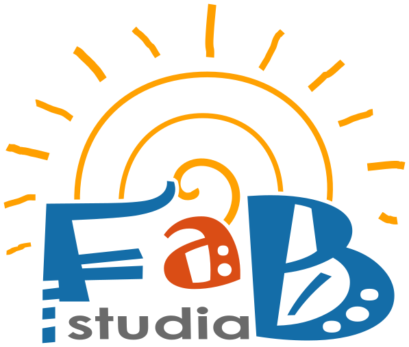

východ · větší terasa
Studio Filemon
Filemon je na východní straně domu. Má větší terasu a velmi příjemný odpolední stín.

Ubytování
Studia jsou rozměrově identická - 23 m². Tvoří je jeden pokoj pro dvě osoby, kuchyňka, WC s bidetkou a sprcha. U každého je venkovní posezení na terase.
Filemon je na východní straně domu. Má větší terasu a velmi příjemný odpolední stín.

Baucis je na západní straně. Terasa je menší, s výhledem na olivové háje a zapadající slunce.
V celém objektu je bezplatný vysokorychlostní internet Starlink. Parkování na pozemku zdarma, venkovní sprcha.
Studia jsou nekuřácká. Na terasách si lze zapálit bez omezení.
Jako skoro všude v Řecku jsou večer komáři. Studia mají sítě ve dveřích a oknech, takže by vás neměli trápit. Přesto se hodí „komárobijec“ do zásuvky a repelent na cestu do taverny a večer venku.